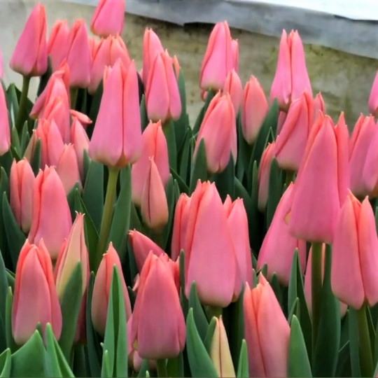
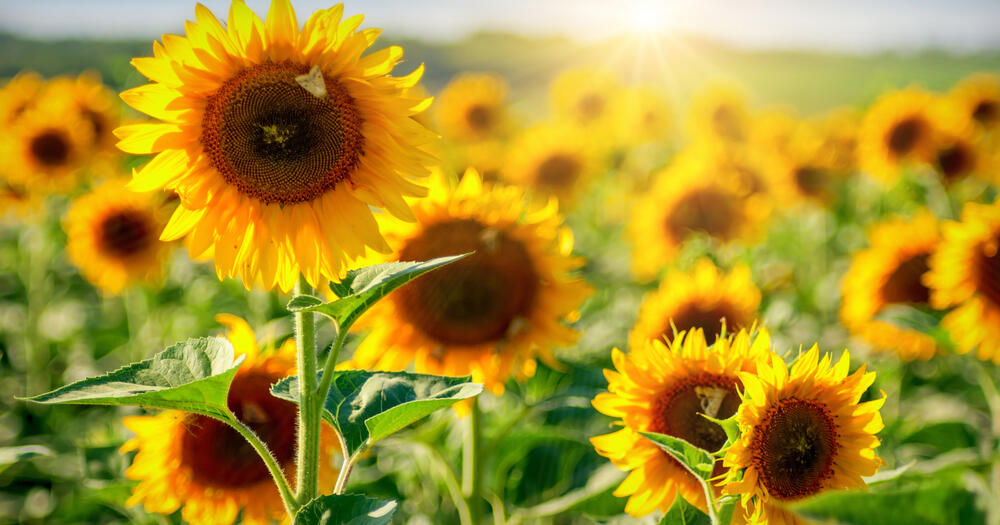
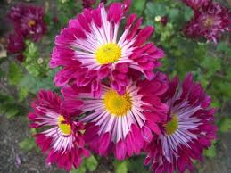
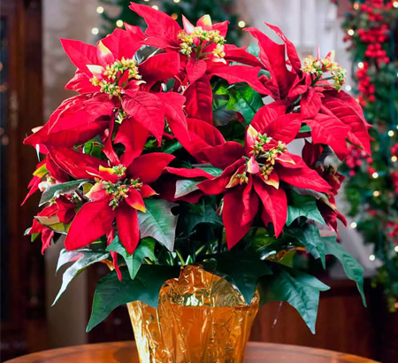

Ласкаво просимо!
Квіти - це найкрасивіше, що створила природа. Вони дарують нам радість цілий рік!
На моєму сайті ви дізнаєтесь, які квіти квітнуть навесні, влітку, восени та взимку.

Весна
Літо
Осінь
Зима